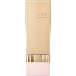
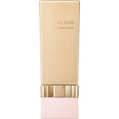

商品の特徴
乾いた肌もヌーディにカバー。
うるおう濃密ツヤ美肌へやわらかに肌と一体化する肌どけ感触リクイドです。
乾いた肌も毛穴の凹凸・色ムラまでヌーディにカバーして、うるおう濃密ツヤ美肌が長時間続きます。
ＳＰＦ２６／ＰＡ＋＋。
- 成分・分量
- 【成分】
シクロペンタシロキサン、水、ＤＰＧ、エチルヘキサン酸セチル、メトキシケイヒ酸エチルヘキシル、セチルＰＥＧ／ＰＰＧ－１０／１ジメチコン、ダイマージリノール酸（フィトステリル／イソステアリル／セチル／ステアリル／ベヘニル）、ジフェニルシロキシフェニルトリメチコン、ジメチコン、ジステアルジモニウムヘクトライト、塩化Ｎａ、エタノール、（ジメチコン／ビニルジメチコン）クロスポリマー、イソステアリン酸ソルビタン、ＢＧ、グリセリン、窒化ホウ素、水酸化Ａｌ、マルチトール、ステアリン酸、トリメチルシロキシケイ酸、ステアロイルグルタミン酸２Ｎａ、ナイアシンアミド、ローヤルゼリーエキス、水溶性コラーゲン、フェノキシエタノール、（＋／－）マイカ、酸化チタン、酸化鉄、酸化スズ
- 用法及び用量
- 【使用方法】
●化粧下地でお肌を整えたあと、お顔全体にご使用ください。
●ご使用前に、キャップをしめたまま必ず上下によく振ってからご使用ください。
●スポンジに直径１ｃｍを目安にとり、両頬においてからのばします。次に額、鼻、あごにのばします。
●特にカバーしたい部分にはさらに少量をとって重ねます。
●替えスポンジには、別売りのカネボウ メイクアップスポンジ《リクイド・クリームタイプ用》をご使用ください。
 
